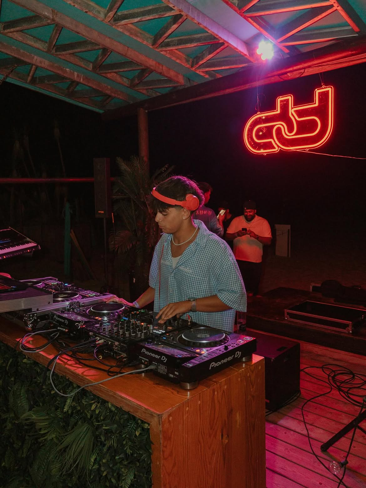
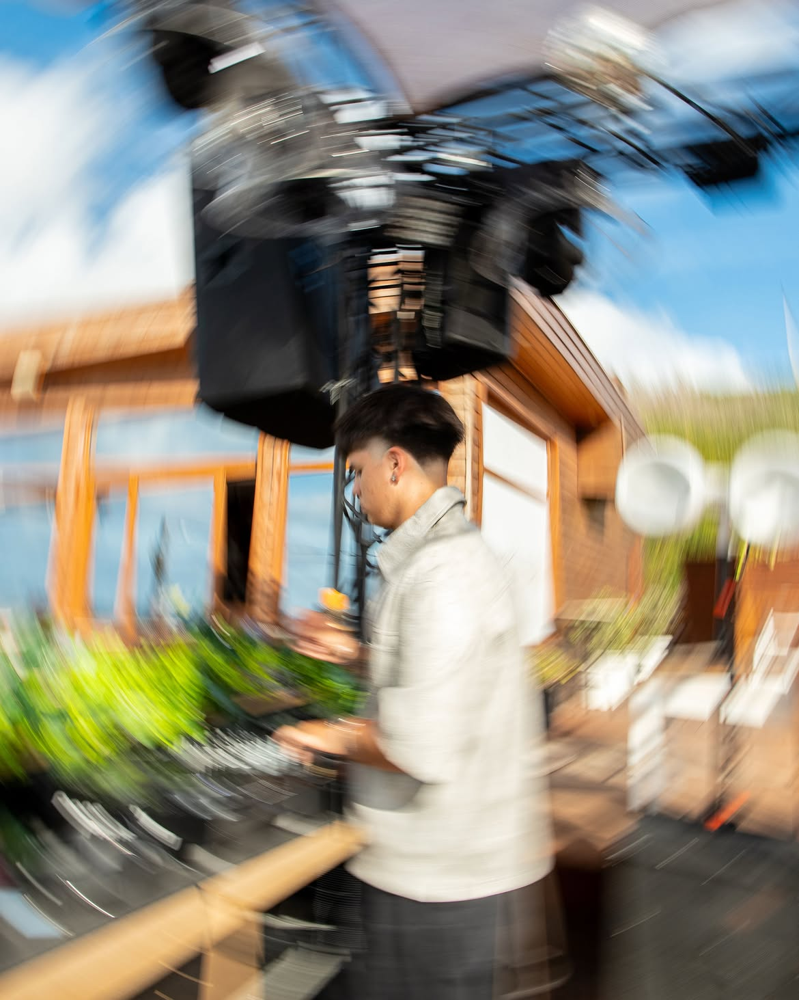
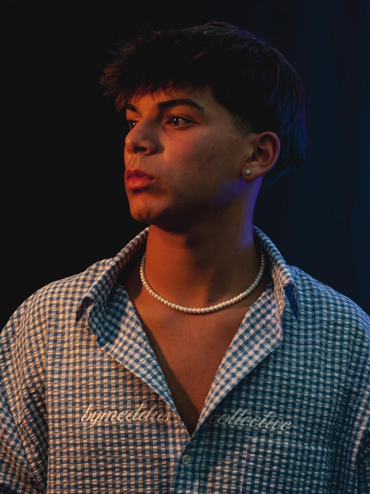

DJ & Producer · Portugal
SANTÖSX
Afro House e House com groove, tensão e atmosfera — pensado para a pista, da estreia ao último tema.
01 Biografia
O som
SANTÖS é um DJ e produtor português dedicado a Afro House e House, com sets pensados para construir energia, groove e uma leitura clara da pista.
A partir de Portugal, o projecto foca-se em ritmo, conexão e atmosferas positivas — do club ao open-air — com uma identidade consistente entre palco e estúdio.
Com referências em Danni Gato, Shimza e Lilocox, o estilo mistura percussão afro com house contemporâneo, privilegiando tensão, emoção e um groove que se sustenta ao longo do set.
02 Single de estreia
MAYE
feat. KARTEK
O primeiro single de SANTÖS: Afro House feito para a pista, disponível em todas as plataformas.
03 Ao vivo
Em set



04 Contacto
Bookings & redes
Para datas, collabs e imprensa, o contacto passa pelas redes. Sets, lançamentos e agenda aparecem primeiro aqui.
Bookings
Pedidos de palco e eventos via Instagram.